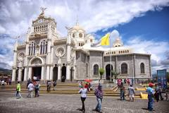

La antigua capital

Cartago es una ciudad de Costa Rica, al sureste de San José. Es conocida por La Negrita, el templo de la Virgen negra en la Basílica de Nuestra Señora de los Ángeles. Las ruinas de la parroquia de Santiago Apóstol forman un parque central. En las afueras, está el Jardín Botánico Lankester, que cuenta con alrededor de 1,000 especies de orquídeas. Más al sureste están las selvas con fauna abundante del Parque Nacional Tapantí – Macizo de la Muerte. El volcán activo Irazú se ubica al noreste.